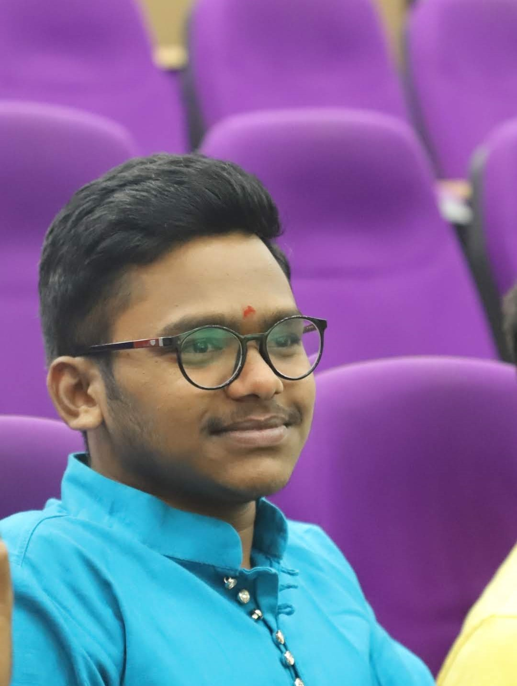

Vamshi Krishna Rapelli

Summary
I am a enthusiastic and dedicated individual thriving to improve my skills and excel in the software field.
Education
- B.Tech in Mechanical Engineering
National Institute of Technology, Warangal(2020-present)
- Intermediate(PCM) - Narayana Junior College, Hyderabad(2018-2020)
- Tenth - St.Joseph's Convent High School, Adilabad(2017-2018)
Work Experience
- Managed Network Expert
Dec 2021- present
- Solved questions on the dashboard
- Domains being Mechanical Engineering and Maths
Skills
- Languages: C++, MATLAB
- Courses: Data Structures & Algorithms, DBMS, OOPs
- Cloud: SQL
- Interpersonal: Problem Solving , Data Analysis, Critical Thinking, Teamwork, Quick Learing
- Interests: Blogging, Basketball, Cricket, Photography